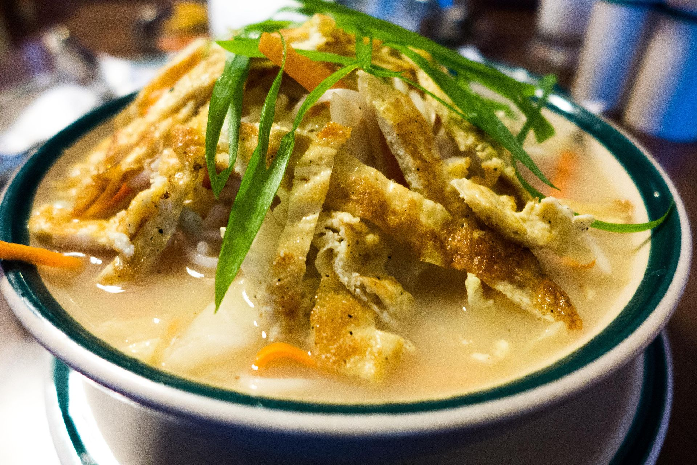

Thukpa
Description

Thukpa (Tibetan: ཐུག་པ ; Nepali: थुक्पा; IPA: /tʰu(k̚)ˀ˥˥.pə˥˥/ ) is a Tibetan noodle soup, which originated in the eastern part of Tibet. Amdo thukpa (especially thenthuk) is a famous variant amongst the Indians (especially Ladakhis and Sikkimis), Tibetans and Nepalese.
The Nepalese version of Thukpa in general has predominant vegetarian feature and bit spicier flavor. The protein ingredients of the dish are given vegetarian alternative according to availability, such as: beans, chickpeas, gram, kidney beans, tofu, paneer etc. Coriander leaves, spring onion or garlic leaves are the popular Nepalese choices of garnish.
Ingredients
- 2 large tomatoes, coarsely chopped
- 1-inch piece fresh ginger, peeled with a spoon
- 4 garlic cloves, peeled
- 3 serrano chiles
- 2 teaspoons cumin seeds
- 2 tablespoons vegetable oil
- 1 pound boneless, skinless chicken thighs
- 2 quarts chicken stock
- 1 large carrot, peeled and coarsely chopped
- 2 red, yellow or orange bell peppers, coarsely chopped
- 1 cup coarsely chopped green beans
- 1 can (8 ounces) bamboo shoots, drained
- 1 cup shredded green cabbage
- 6 ounces thin rice noodles
- Juice of 1 lemon
- Kosher salt
- Finely chopped scallions
- Bean sprouts
Steps
- In a food processor, combine the tomatoes, ginger, garlic, serranos, cumin and oil and process until smooth. Transfer the paste to a heavy-bottomed pot along with the chicken and cook over medium-high heat, stirring occasionally, until aromatic, 3 to 4 minutes. Add the stock and bring to a boil.
- Reduce the heat to medium and add the carrot, bell peppers, beans, bamboo shoots and cabbage. Cover the pot halfway and simmer until the vegetables are tender and the chicken is cooked through, 20 to 25 minutes.
- Using tongs, transfer the chicken to a plate. Once it is cool enough to handle, tear it into bite-sized pieces and return it to the pot.
- Add the noodles and lemon juice and simmer until the noodles are tender, 4 to 6 minutes. Season with salt.
Spoon the thukpa into bowls, garnish with scallions and bean sprouts and serve very hot.
Home